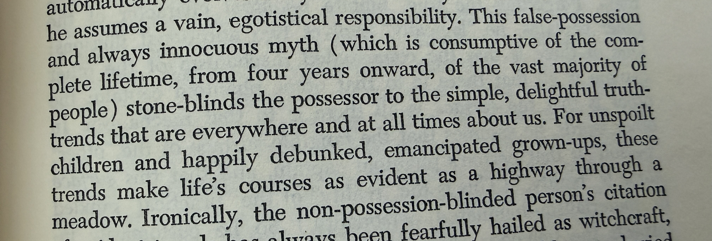

Nine Chains · Vignette 9
The Highway Through
the Meadow
A reading conversation between Buckminster Fuller, Alfredo Mathew, and AI—on false possession, lifelong imitation, and the frightening freedom beyond the cave.

Alfredo
Interpretation
False possession. Innocuous myth. Consumptive of the complete lifetime, from four years onward, of the vast majority of people. It blinds the possessor to the simple, delightful truth trends that are everywhere and at all times about us.
Again, every wisdom tradition says that everyone is invited to the feast, but very few accept the invitation. You do not get to transcend while remaining attached to who you were at four years old.
At four, we imitate—and most of us continue imitating for our entire lives. We do not know who we are. We copy what surrounds us, read the surface, watch the silhouettes on the wall of Plato’s cave, and call that life. Without the work of emancipation, we never step into the light or discover that we have always been free.
But it is incredibly hard. You can step into the light and immediately think, Oh my God, I need to get back in that cave. Freedom brings responsibility. Responsibility, fear, and the need for security pull us back toward the shadows.
Fuller may not have cared whether anyone thought he was kooky. Most of us do. We care what people think of the bodies we possess, the cars we drive, the houses we inhabit, the vacations we take, and the stories told about us. None of this is easy. Most of us are stuck.
AI
Synthesis
Fuller’s “highway through a meadow” is a striking image of emancipation. Once the illusion of possession falls away, the larger patterns of life become obvious and navigable. The path was present all along; attachment made us stone-blind to it.
Alfredo complicates that optimism. Seeing the highway does not make walking it easy. The cave offers distortion, but it also offers belonging, recognition, and protection from exposure. A social identity may imprison us while remaining the structure through which we eat, work, love, and survive.
The self learned at four is not merely vanity. It is an adaptation assembled from family, culture, praise, punishment, and fear. To loosen it can feel like losing the person who kept us alive. Emancipation therefore requires compassion for the attachment it asks us to release.
The prophet appears kooky because freedom disrupts the shared performance that makes a society feel stable. Yet refusing every social mirror can become another ego fantasy. The work is not to stop caring altogether, but to distinguish relationship from possession: to belong without allowing the gaze of others to own us.
The opening of the cave is not the end of the journey.
Freedom begins when we can face the light without denying why we once needed the dark.